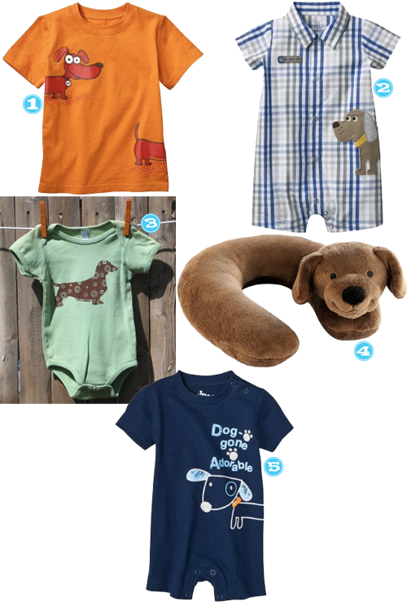

I am loving this tableware by Aedriel Originals! I love how simple it is and of course I love the bright colors. Â One of each please!!
Etsy Spotlight: B. Children’s Wear
April 18, 2011 by
I ran across B. Children’s Wear while I was searching “hedgehogs” on Etsy. And now you’re thinking hedgehogs?! Yes, hedgehogs are a significant part of my next born’s nursery…I promise you it’s cute. Â So anyway, I LOVE LOVE B.Children’s Wear stuff so much that I ordered the little hedgehog t-shirt and I had to restrain myself from ordering other stuff.
Etsy Spotlight: Sir Bubbadoo
April 14, 2011 by
I LOVE LOVE LOVE when I find a store that has super cute modern baby goods. Â So I had to share when I came across Sir Bubbadoo. You will definitely want to check this store out. Â Every. Single. Thing. in it is ADORABLE. Â I even went so far as to scour the sold items and then moved on to the blog.
A Little Weiner Love
April 13, 2011 by

Der posted recently about all the weiner dog finds available for babies but we have been remiss in our duties to all you weiner loving ladies out there. So here you go ladies, enjoy!
- Modcloth, Are Weiner There Yet? Luggage Tag
- Modcloth, Blue the Dachshund Necklace
- Walmart, Women’s Graphic Short Sleeved Tee
- Etsy.com, Happy Dachshund Display Platter
- Etsy.com, Dachshund Ring -This item will probably be on my finger in the very near future. Too cute!!
- Etsy.com, Picasso Weiner Dog Pendant Necklace
- Etsy.com, Custom Dachshund T-shirt
- Etsy.com, Keep Calm and Carry A Dachshund Pillow
Etsy Spotlight: Tweet Baby Designs
April 7, 2011 by

I have a teethingasaurus at my house. It’s a new beast that’s turned my sweet angel faced baby into a drool covered piranha seeking anything and everything he can put in his mouth STAT. I had heard the idea of a teething necklace before, but when I came across these from Tweet I was head over heels. I have all but basically stopped wearing jewelry because my little one tugs on everything or puts it in his mouth. This would be for mommy AND the drool king. I didn’t even think twice, just snatched one up immediately. Perfecto!
Etsy Spotlight: The Miniature Knit Shop
March 31, 2011 by

I ran across the booties from The Miniature Knit Shop first and just about died from the cuteness. Â Then, when I saw them paired with the hats…died again. Â OMG. Â I mean if you aren’t dying right now, you just aren’t human.
Etsy Spotlight: Kinies
March 24, 2011 by

What I am about to show you may just blow your mind because it did mine. Everything I ever thought I knew about a fanny pack is now over, long gone, dunzo…. I mean, does it get any cuter than this?
- Waist Purse– Gray
- Limited Edition Waist Purse
- Waist Purse– Orange
- Waist Purse– Turquoise
- Waist Purse– Blue Gray
Boy After My Own Weiner Loving Heart
March 22, 2011 by
I’ve made it pretty clear in the past that my top choice of animal is a weiner dog. I own three and while they drive me to the brink of my sanity almost daily and my mother is convinced that since the baby came that I don’t love them, I do love them. See Mom, if I didn’t love them they would be dead by now. Dead because I would have killed them with my bare hands.
My love is so deep that it wasn’t enough to have 3 of those fools running around like they own the place and a weiner dog themed baby nursery… I need my son to be loaded up with weiner dog gear too. Here are some super adorable finds, whether you are a weiner lover or not. Feel better now, Mom?

- Target, Weiner Tee
- Target, Weiner Romper
- Etsy, Weiner Onesie
- Target, Weiner Neck Support
- Target, Weiner Tshirt Romper
Etsy Spotlight: Banjo Puppets
March 17, 2011 by

My son is a huge Sesame Street fan and when I saw these puppets from Banjo Puppets they immediately made me think of Sesame Street. Â I think my son would flip over these!
Gumball Monsters, Banjo Puppets
Easter Basket Time!
March 16, 2011 by
I’ve been on the Etsy hunt for Easter basket stuff so that the standard candy filled eggs aren’t the only thing my child opens as he has enough energy for about 4 children combined without sugar. Â Here is what I’ve come up with thus far….
- Easter Bunny Initial Tee, Gorno Couture
- Suess-a-saurus Clip On Tail, The Blue Orange
- Dinosaur Jumbo Crayons, Lil Doodlers
- Personalized Matching Game, Burlap & Blue
- Mini I-Spy Bag, Emmie’s Designs


Recent Comments